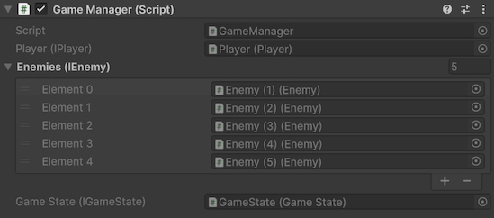

Serialized interface
Unity does not serialize interface-typed members by default, but interfaces are a core part of clean dependency injection code.
Saneject solves this by generating serialized backing members for interface fields and auto-properties marked with [SerializeInterface].
This gives you interface-based code with normal inspector workflows and editor-time injectionEditor-time injectionSaneject workflow that resolves dependencies and writes them into serialized objects in the Unity Editor, before entering Play Mode..
Why Unity can't "serialize an interface"
Unity serialization supports concrete serializable data and UnityEngine.Object references.
An interface is only a contract, not a concrete serializable type.
So a member typed as IMyService is skipped by Unity's serializer unless you add an explicit serialization bridge.
In DI-heavy code, this matters because Saneject writes resolved dependencies into serialized members. If interface members cannot serialize, interface-based injection cannot persist in scenes and prefabs.
What the Saneject Roslyn generator adds
For each member marked with [SerializeInterface], Saneject generates code in a matching partial class:
- Hidden serialized backing member(s), named
__<memberName>, typed asObject,Object[], orList<Object>. OnBeforeSerialize()to sync interface value → backing value (editor only).OnAfterDeserialize()to sync backing value → interface value.SwapProxiesWithRealInstances()for single interface members, used at when runtime proxiesRuntime proxyScriptableObjectplaceholder asset (RuntimeProxy<TComponent>) injected into interface members at editor time and swapped to the real instance during scope startup. are injected into the interfaces.
Supported member shapes:
- Single interface:
IMyService - Interface array:
IMyService[] - Interface list:
List<IMyService>
User code example
using Plugins.Saneject.Runtime.Attributes;
using UnityEngine;
public partial class GameManager : MonoBehaviour
{
[Inject, SerializeInterface]
private IPlayer player;
[Inject, SerializeInterface]
private IEnemy[] enemies;
[field: Inject, SerializeInterface]
public IGameState GameState { get; private set; }
}
Generated partial
using System.ComponentModel;
using System.Linq;
using Plugins.Saneject.Runtime.Proxy;
using UnityEngine;
public partial class GameManager : ISerializationCallbackReceiver, IRuntimeProxySwapTarget
{
[SerializeField, HideInInspector, EditorBrowsable(EditorBrowsableState.Never)]
private Object __player;
[SerializeField, HideInInspector, EditorBrowsable(EditorBrowsableState.Never)]
private Object[] __enemies;
[SerializeField, HideInInspector, EditorBrowsable(EditorBrowsableState.Never)]
private Object __GameState;
[EditorBrowsable(EditorBrowsableState.Never)]
public virtual void OnBeforeSerialize()
{
#if UNITY_EDITOR
__player = player as Object;
__enemies = enemies?.Cast<Object>().ToArray();
__GameState = GameState as Object;
#endif
}
[EditorBrowsable(EditorBrowsableState.Never)]
public virtual void OnAfterDeserialize()
{
player = __player as IPlayer;
enemies = (__enemies ?? System.Array.Empty<Object>())
.Select(x => x as IEnemy)
.ToArray();
GameState = __GameState as IGameState;
}
[EditorBrowsable(EditorBrowsableState.Never)]
public void SwapProxiesWithRealInstances()
{
if (__player is RuntimeProxyBase playerProxy)
player = playerProxy.ResolveInstance() as IPlayer;
if (__GameState is RuntimeProxyBase stateProxy)
GameState = stateProxy.ResolveInstance() as IGameState;
}
}
What this enables
With [SerializeInterface], you can:
- Use interface fields and auto-properties directly, no wrapper classes needed.
- Assign interface references in the inspector like other serialized references.
- Combine
[Inject]+[SerializeInterface]for clean editor-time DI with persistent scene/prefab data. - Use interface collections (
T[],List<T>) with normal bindingBindingInstruction declared in aScopethat tells Saneject what to resolve, how to inject it, and where to search. and injection workflows.

If a serialized interfaceSerialized interfaceSerializeInterface member (IService, IService[], or List<IService>) that Saneject persists through a generated hidden Object backing member. field is assigned an object that does not implement the expected interface, Saneject's inspector validation clears that reference to null.
Runtime proxy swap hook
SwapProxiesWithRealInstances() is generated by the same source generator.
It is relevant when a serialized interfaceSerialized interfaceSerializeInterface member (IService, IService[], or List<IService>) that Saneject persists through a generated hidden Object backing member. member currently holds a runtime proxyRuntime proxyScriptableObject placeholder asset (RuntimeProxy<TComponent>) injected into interface members at editor time and swapped to the real instance during scope startup. asset.
At runtime startupRuntime startupPhase after entering Play Mode when scopes initialize, global registrations are populated, and runtime proxy references can be swapped to real instances., Saneject calls this method for registered proxy swap targetsProxy swap targetComponent that implements IRuntimeProxySwapTarget and is asked at runtime startup to replace proxy references with resolved real instances..
The generated method checks each single-value interface backing member and replaces any proxy with its resolved runtime instance.
For full proxy behavior and resolution strategies, see Runtime proxy.
Requirements and notes
- The declaring type must be
partial. - The declaring type must be Unity-serializable and non-sealed.
- For auto-properties, use
[field: SerializeInterface]and keep a setter (for exampleprivate set), so generated deserialization can assign the value. - Generated backing members are hidden (
HideInInspector) and editor-browsing-hidden (EditorBrowsable(Never)). - Default Unity inspector ordering would place generated backing members at the end, but Saneject's custom inspector renders them in logical member order. See MonoBehaviour inspector.